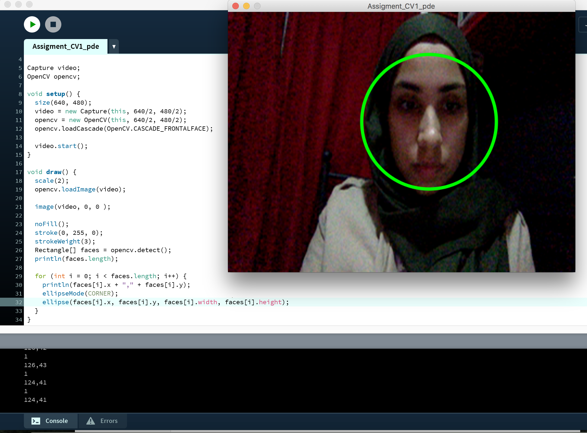

In de workshop computer vision werd er gewerkt met de programma Processing. Dit is een open source programmeertaal en -omgeving voor mensen die interactieve afbeeldingen en animaties willen programmeren. De opdrachten die in deze workshop uitgevoerd werden, zijn samen met de resultaten hieronder weergegeven.
Assignment 1
Voor deze opdracht was het de bedoeling om een programma te schrijven dat drie of meer cirkels tekent. Hier waren een aantal voorwaardes voor gegeven. Ze moesten zich op verschillende locaties bevinden, uit verschillende kleuren bestaan en verschillende breedtes en hoogtes hebben. De afbeelding hierboven laat de code met het resultaat ernaast zien.
Assignment 2
Voor de tweede opdracht moesten er andere vormen gebruikt worden dan de cirkel. De opdracht was om een programma te maken die minimaal vier verschillende vormen tekent, uit verschillende kleuren bestaan en zich allemaal op verschillende plaatsen bevinden. Ik heb hierbij gekozen voor een vierkant, lijn, driehoek en de pacman vorm. Het resultaat is hierboven te zien.
Assignment 3
Bij deze opdracht werd er gewerkt met interactieve vormen. De opdracht was om een programma te coderen dat minimaal twee verschillende vormen met verschillende kleuren tekent en om ze vervolgens interactief te maken. Ik heb hierbij gekozen voor een vierkant en een lijn. Wanneer de programma begint wordt de vierkant steeds groter en groter en de lijn beweegt met de muis mee.
Assignment CV1
Vanaf deze opdracht begon het experimenteren met de webcam. Er werd hierbij gebruik gemaakt van voorbeeld code voor de live webcam, die in de programma processing te vinden zijn. De bedoeling was om de code te bestuderen en te kijken of je instaat zou zijn om de code te vinden die ervoor zorgt dat er een vierkant om een gezicht getekend wordt, wanneer die herkent wordt. Vervolgens moet de code zo aangepast worden, dat de vierkant een cirkel wordt.
Assignment CV2

Voor deze opdracht wordt er verder geëxperimenteerd met de live cam. Dit keer moest er voor elke gezicht die herkent wordt een anonieme zwarte balk voor de ogen komen, of een rode clowns neus. Ik heb gekozen voor de anonieme zwarte balk voor de ogen. Dit is te zien in de afbeelding hieboven.
Assignment CV3
Na een aantal experimenten uitgevoerd te hebben, is het bij deze opdracht de bedoeling dat je in eentje, door codes te schrijven en aan te passen, iets leuks of grappigs te creëren. Ik heb ervoor gekozen om mezelf rode vermoeide ogen te geven. Het resultaat wordt hierboven weergegeven.